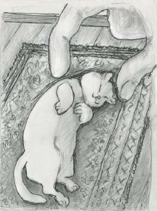
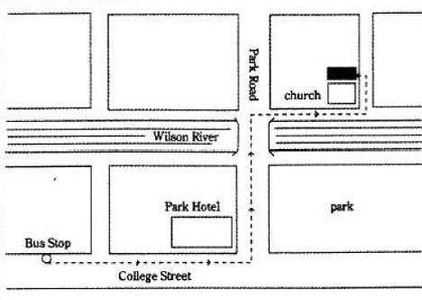

| 大学入試 自由英作文問題 モデル解答集 ＜第5集＞ 改訂版 | |
| 塩川 春彦 | |
| (2017) | |
塩 川 春 彦
帝京科学大学医療科学部（千住キャンパス）教授。
1990年代より、文科省検定済英語教科書Unicorn シリーズ（文英堂）の執筆に携わっている。特に、旧指導要領下の「ライティング」、現指導要領下の「英語表現」では、中心執筆者を務めている。
教科書執筆者としては、「良質な教科書」「結果として入試にも役立つ教科書」を目指していたので、大学入試における自由英作文に注目してきた。また、"高校生のライティング能力をどのように伸ばすべきか"という問題意識は当然持っていたので、自由英作文問題対策の参考書にも目を配ってきた。
「こんな対策本があってもよいのではないか」と思い立って執筆したのが本書である。
その他の主な著書
『英語が使える日本人の育成』（共著、三省堂）
『Interface―ビジネス英文メール入門』
（マクミランランゲージハウス）
『Introduction to MBA English―英語で学ぶ経営学の基礎』
（マクミランランゲージハウス）
『英文ライティング・日英翻訳ベーシックコース』
（DHC総合教育研究所）
The Real World Today（桐原書店）
20 STEPS TO CRITICAL WRITING（共著、桐原書店）
本書は、大学入試における自由英作文問題の典型的な論題群と、それらに対する解答例を提示している。本書の対象は、"志望校の読解問題だけでも確実に合格水準の得点をし、加えて英作文問題で得点を上乗せしたい"という意欲のある受験生である。
本書には、他の自由英作文問題対策参考書に見られない特徴がある。それは、解説を最小限に抑え、受験生には、限られた時間にできるだけ多くの解答例を読むことに集中してほしいという意図を持っていることである。このような意図を持った書籍があってもよいだろうと思ったことが、本書を出版しようと思い立った動機である。
以下に、本書のねらいについて説明する。
本書のねらい
1 自由英作文のための知識の基盤をつくる
本書を読み通すことにより、自由英作文の典型的な諸論題について、"こんな論題にはこういう論点があり、こういう英語表現を用い、このように論理を展開すればよい"という、基本的知識の基盤が形成されるはずである。
ここで言う「基本的知識の基盤」が意味することを具体的に説明したい。本書の解答例の中に出てくる単語やイディオムは、英語を書く際に"使える"語彙である。また、本書の解答例は基本的に、"主題文―支持文―結語"という英語の文章の基本的な構成法にしたがっているので、読み通すことで文章の構成パターンも身につく。さらに、典型的論題群の解答例を読み通して得た知識を組み合わせることによって、他の様々な論題に対応することが可能となるのである。このことは、実際に本書の各章の解答例の後に掲載した「類似論題」「関連論題」の項目を参照し、確かめてほしい。
2 アウトプットの前にインプットを
先に「多くの解答例を読むことに集中してほしい」と書いた。このことの意味を、次に説明したい。ライティングの力を伸ばすためには、"書いて添削してもらうこと"を繰り返す必要があるとされている。それはその通りである。しかし、社会問題の知識も乏しく、ライティングのために"使える"語彙力も貧しく、英語の文章の構成法をきちんと学んでいない学習者が書いた英作文には、せいぜい文法の誤りを添削することくらいしかできない。結局、手本を提示し、「このように書きなさい」となるのである。
やみくもに英作文する前に、"ライティングの手本になる英文"をたくさん読んだ方がよい。一定量以上の良質のインプットがなければ、良いアウトプットはあり得ないのである。ただし、入試の読解問題の英文、進学校で使われる読解用テキストの英文の多くは、受験生にとって"ライティングの手本になる英文"ではない。使われている単語が難しかったり，構文が複雑だったり、書き手の個性が強く出た文体であったりするからである。
本書では、日本人学習者にとっての"ライティングの手本になる英文"を提示しているつもりである。
3 日本語訳から英文再現へ
本書では、後半部分に解答例の日本語訳を掲載している。これらの日本語訳から英文を再現する練習を通して、本書で学んだ知識を血肉化してほしい。
2016年11月
著者しるす
本書における論題の選定の元になっているのは、著者が作成した過去20年余りの国公立大学の自由英作文問題のデータベースである。本書で取り上げた論題ごとに、他大学で出題された同一論題や類似論題に関する情報を付記しているが、それらは、このデータベースに基づいている。
このデータベースにより、「頻出論題」群も把握でき、「小学校の英語教育の是非」に代表される頻出論題群は当然に取り上げている。
論題選定の基準とデータベース
しかし、論題選定の基準は、"頻出かどうか"だけではない。環境・資源、政治、経済、社会、教育、科学、医療・医学などの分野にまたがる論題群、「尊敬する人」のような信条・好みを書かせる論題群などを概観し、バランスを重視して、本書掲載の論題を選定している。それは、「まえがき」でも述べたように、本書を通して、自由英作文のための「知識の基盤」となるものを提供したいからである。バランスのとれた論題の選定のためにも、このデータベースが貢献している。
本書における論題選定は、著者の気まぐれや好みでなされているわけではないことを強調しておきたい。
各章の構成
・論題
・解答例
・英文の構成
解答例の英文のアウトラインを示す
・過去20年のデータ分析
国公立大学入試における過去20年余りの出題実績データから、同一論題、類似論題、関連論題をピックアップ、本書が示す解答例の応用範囲を示す
[社会～教育・学習、情報技術]
小学生にスマートフォン(smartphone)を持たせることについて，自分の意見を英語で述べなさい。その際，「スマートフォンを利用して楽しく勉強ができる」という意見と「有害な情報に接しやすい」という意見があることを紹介した上で，それ以外の理由をあげて自分の意見を述べること。1行10語を目安として5行以上の英文で書きなさい。
（富山大学）
＊解答例は次ページに掲載
小学生にスマホを持たせることの是非
解答例1（短いバージョン）
Regarding giving elementary school children a smartphone, there are pros and cons. Some people say that children can enjoy studying with educational applications on smartphones. Others say that children can access harmful information. In my opinion, elementary school students should be prohibited from having smartphones. For many kids, a smartphone becomes a mere game machine, and it hinders their studying. (60 words)
英文の要旨
小学生がスマートフォンを持つことは禁じられるべき。多くの子供たちにとって、スマートフォンは単なるゲーム機になり、そしてそれは、彼らの勉強を妨げている。
＊次ページに解答例2を掲載
小学生にスマホを持たせることの是非
解答例2（長いバージョン）
There are pros and cons regarding the issue of giving elementary school children a smartphone. For example, some people say that children can enjoy studying with educational applications on smartphones while others say that children can access harmful information.
In my opinion, elementary school students should be prohibited from having smartphones. The problems are mainly caused by the fact that a smartphone is with a child everywhere, including the times outside of parental supervision. Many children are addicted to SNS, online games, and even pornography, resulting in neglecting their studies. Smartphone addiction also damages children's eyes. SNS can become a hotbed of bullying; treating someone as an outcast. Even if elementary school kids are not allowed to have smartphones, they still have access to computers. With computers, they can gain access to educational tools and the wealth of information on the web. For communication between parents and their children, "cell phones for kids" are good enough. (155 words)
＊英文の構成は次ページに掲載
英文の構成
第1パラグラフ （現状の概説）
小学生にスマートフォンを与えることについては、賛成意見と反対意見がある
第2パラグラフ
主題文：
小学生はスマートフォンを持つことを禁じられるべき
支持文： （理由の論述）
問題は主に、スマートフォンが、どこにいても子供とともにある、という事実によって引き起こされる
・SNSなどへの依存 ・子どもたちの目への害 ・SNSはいじめの温床
コンピュータがあれば、スマホは要らない
結 語：
小学生には「子ども用スマホ」で十分
小学生にスマホを持たせることの是非
過去20年のデータ分析
同一論題
秋田大学など4大学から出題された。
類似論題
「高校生の携帯・スマホ所持を禁じるべきか」（京都府立大学）
「学校での携帯・スマホの使用を禁じるべきか」（筑波大学など2大学）
関連論題
「携帯・スマホの日常生活における重要性」（小樽商科大学など）
携帯・スマホに関連した論題は、30以上の大学から出題され、携帯・スマホは最頻出の素材である。ただし、2004年以前は、「携帯電話の功罪」「携帯電話は日常生活をどう変えたか」のような論題がほとんどで、日本社会全体に携帯電話が入り込んできたことへの困惑のようなものが反映した論題であった。05年、06年は、携帯・スマホに関する論題は見当たらず、08年以降は、子ども（あるいは高校生）と携帯・スマホの関係の在り方を問う論題がほとんどである。あとは、価値判断抜きで「携帯・スマホの日常生活における重要性」のような論題となっている。
[社会～教育・学習]
Answer the following question in about 150 English words.
Do you think that Japanese universities should change the start of the academic year from spring to autumn?
（京都府立医科大学）
＊解答例は次ページに掲載
秋季新学期制への賛否
解答例
I don't think that the Japanese school year should change at all levels, but I do think that Japanese universities should change the start of the school year from spring to autumn. The reasons are as follows. First, this change would help to promote an international exchange of students because in many countries the school year begins in autumn. It would encourage Japanese students to study abroad and foreign students to come to Japan. Second, if this change is implemented, there will be two six-month gaps: one before entering university, and the other between university graduation and the following April (the start of the working year). The two periods could be put to good use. During the first gap period, high-school graduates could broaden their social experiences. On the other hand, the second gap could be used for job hunting. Thus, universities could take another step toward internationalized education and businesses could hire better prepared students. (156 words)
＊英文の構成は次ページに掲載
英文の構成
主題文：
日本の大学は、学年の始まりを春から秋に変えるべき
支持文：（理由の列挙）
（理由1） 多くの国々では学年が秋季に始まるので、学生の国際交流を促進するのに役立つ
（理由2） 大学入学前と大学卒業後にギャップ期間があるが、それらは有効利用できる。一つは社会経験の拡大に、もう一つは就職活動に使える。
結 語：
大学は国際化された教育へ踏み出すことができ、企業はより良く準備できた学生を雇うことができる
秋季新学期制への賛否
過去20年のデータ分析
同一論題
茨城大学、一橋大学など4大学
[社会～情報技術、コミュニケーション]
現在ではインターネットでさまざまな情報を簡単に手に入れることができます。これは良いことでしょうか，悪いことでしょうか，あるいはその両方でしょうか。自分の意見を120語程度の英語で述べなさい。
（静岡大学）
＊解答欄は次ページに掲載
インターネットで情報収集することの是非
解答例
The Internet provides us with an enormous amount of information. It has many beneficial effects on our society and our lives. For example, we can find information that used to be only available to a limited number of people who had the money to buy books, magazines, and so on. Now anyone can access much of this information anytime and anywhere in the world, and very often for free. Furthermore, a lot of information on the Internet is posted by ordinary individuals, which means that we can hear a wider variety of voices. Certainly there are some negative effects. The most serious one is that various types of false information and hate speech spread on the web. Still, I believe that there are more advantages than disadvantages. (127 words)
＊英文の構成は次ページに掲載
英文の構成
主題文：
インターネットは膨大な量の情報を提供し、多くの有益な影響を与えている
支持文： ＜具体例の列挙＞
かつては限られた人々にのみ入手可能だった情報を見つけられる
だれでも、いつでも、どこでも、大量の情報にアクセスできる
インターネット上では幅広い声を聞ける
（反論と再反論）偽情報や憎悪表現の拡散のような否定的な影響があるが、それでも、不利益よりも有益性の方が多い。
インターネットの利点と欠点
過去20年のデータ分析
類似論題
「インターネットの利点と欠点」（公立はこだて未来大学など2大学）
「インターネットが社会、文化、生活に与えた影響（とその評価）」（千葉大学など5大学）
[社会～教育・学習、大学]
Do you think that public universities in Japan should be free? Why or why not?
（電気通信大学）
＊解答例は次ページに掲載
国公立大学の授業料を無料化すべきか
解答例
I strongly believe that tuition for public universities in Japan should be free. There are at least two reasons. First, many Japanese people accept the wrong idea that university tuition should be paid by the student benefitting from the education. They should remember that education produces good citizens, who contribute to the community as workers and taxpayers. It is the whole society that benefits from education. Indeed, higher education is so essential for a society that its cost must be covered by society. Second, receiving education is a human right. Therefore, school fees, including university tuition, should be as free as possible in order to guarantee equal opportunities. In fact, university tuition is already free in 14 of the 30 OECD countries. Among the 16 countries in which university tuition fees exist, 13 countries offer grant-type scholarships. However, this is not the case in Japan and Korea. In these two countries, tuition exists without grant-type scholarships. (155 words)
＊英文の構成は次ページに掲載
英文の構成
主題文：
国公立大学の授業料は無料であるべきだ。
支持文： （理由の列挙）
（理由1） 大学の授業料は、受益者である学生が払うべきであるという考えは誤っている。教育の恩恵を受けるのは社会全体であるから、その費用は、その社会が負担するべき。
（理由2）教育を受けることは、一つの人権であるから、平等な機会を確保するためには、大学の授業料を含む学費はできるだけ無料でなければならない。実際、OECD加盟国のうち14か国で無料化が実現している
大学授業料
過去20年のデータ分析
類似論題
「大学授業料は親が払うべきか、学生本人が払うべきか」（電気通信大学）
関連論題
「大学教育の義務化への賛否」（電気通信大学）
[社会～ジェンダー、教育・学習、就労]
In your opinion, what are some advantages if men and women could choose their career paths without being influenced by gender stereotypes? Write a brief essay in English consisting of around 100 words.
（九州大学）
＜編者注＞ この論題の前に、"職業には、男向きの職業と女向きの職業がある""女性は本質的に数学や科学に才能がない"などの性差に関わる偏見（ジェンダーステレオタイプ）が、科学技術関連職業への女性の進出を阻んでいる、という論旨の英文が置かれている。
＊解答例は次ページに掲載
ジェンダーステレオタイプから自由になることの利点
解答例 （137語、[ ]内を省略すれば、101語）
There would be various advantages if women and men could choose their career paths without being influenced by gender stereotypes. First, a lot more women would have scientific and technical careers, such as medical doctors and engineers. This would promote workforce diversity in such fields, and this is desirable for a society because it is said that a diverse workforce fosters innovative ideas. [At the same time, this situation would encourage school girls to develop their abilities in STEM (science, technology, engineering and math) subjects.] Second, men would have more diverse ways of living, too. For example, stay-at-home dads would not be seen as social dropouts. [No men would suffer from the social pressure that forces men "to be strong".] In conclusion, being free from gender stereotypes would increase the potential of individuals to contribute to society.
＊英文の構成は次ページに掲載
英文の構成
主題文：
ジェンダーステレオタイプに影響されることなく職業進路を選ぶことができれば、さまざまな利点がある
支持文： （利点の列挙）
（利点1）
多くの女性が、医師やエンジニアのような科学技術的な職業に就く
・ 労働力の多様性を促進し、多様性のある労働力が革新的なアイデアを促進する
・ 女子生徒たちがSTEM科目で彼女たちの能力を伸ばすことを励ます
（利点2）
男性も、より多様な生き方ができる（例：家にいるパパ）
"強くあること"を強制する社会的圧力に、男性たちは苦しむことはないだろう
結 語：
ジェンダーステレオタイプから自由になるとは、個々人の社会に貢献する能力を高める
ジェンダーステレオタイプから自由になることの利点
過去20年のデータ分析
類似論題
ジェンダーに関わる論題は、以下に見るとおり、多くの大学から出題されているので、しっかり学んでおくべきである。
「ジェンダーステレオタイプを刷り込まない子供用の玩具」（東京学芸大学）
「男性優位の職場への女性の進出」（はこだて未来大学など2大学）
「"家にいるパパ"は日本で増えるか」（北海道大学）
「女性の政界への進出について」（東京大学など2大学）
「男女は平等の機会を与えられているか」(長崎大学など2大学)
関連論題
「女性の労働参加率」（小樽商科大学など3大学）
「家事分担について」（北海道大学など）
[社会～教育・学習]
Most high-school students think of homework as an unpleasant but unavoidable fact of life. However, recently some high schools, in places such as England and America, have actually made rules that say teachers may not assign any homework. These schools have also changed the finishing time from, for example, 3:00 to 5:00. The hope is that if students can do all of their studying at school, they will be better able to enjoy time with their family at home.
What do you think of this policy of no homework and longer school days? Please write your answer in about 150 English words.
（福岡教育大学）
＊解答例は次ページに掲載
宿題廃止政策の是非
解答例
I agree with the policy that does not allow teachers to give homework to their students because I believe that student autonomy and spontaneity should be respected. On the other hand, for the same reason, I am against the policy of increasing class hours.
Many parents and teachers would think that the idea of abolishing homework without increasing class hours is foolish. However, such a policy was implemented in Finland and has achieved remarkable results. In Finland, teachers usually do not give their students homework. In addition, school class hours in Finland are the shortest among developed countries. In spite of that, when the academic abilities of 15-year-old students are compared, Finnish students are at the top among developed countries.
If such a policy is introduced in Japan, unfortunately, it would only make private cram schools prosperous. Still, I believe in the benefits of the policy of abolishing homework without increasing class hours. (153 words)
＊英文の構成は次ページに掲載
英文の構成
序 論： （メインアイデアの提示）
学生の自主性と自発性は尊重されるべきなので、教師たちが学生に宿題を出すことを許さないようにする政策に賛成。一方、同じ理由から、授業時間を増やすという政策に反対。
本 論： （メインアイデアの妥当性の論述）
フィンランドでは、教師は通常、学生たちに宿題を与えない。加えて、フィンランドの授業時間は、先進国の中で最も短い。それにもかかわらず、15歳の学生の学力が比較される時、フィンランドの学生は先進国の中でトップにいる。
結 論：
そのような政策が日本に導入されれば、民間の塾を繁栄させるだけだろうが、授業時間を増やすことなく宿題を廃止するという政策の有益性を信じている。
宿題廃止政策の是非
過去20年のデータ分析
類似論題
「長期休みに宿題を出すことの是非」（高知工科大学）
「宿題の意義」（会話文完成問題、東京農工大学）
[社会～教育・学習、国際交流]
ここ数年，日本の大学からの海外留学者数が減少傾向にあると言われていますが，あなたはこの状況をどのように考えますか。150語から200語程度の英語で自由に論じなさい。
（奈良教育大学）
＊解答例は次ページに掲載
日本人海外留学者数の減少の原因と影響
解答例
The number of Japanese students who study abroad has not been increasing in recent years. There are at least three factors behind this trend. First, many Japanese university students consider studying abroad to be disadvantageous in terms of job hunting, which usually begins during their third year. Another factor is Japan's bad economy, which has lasted for more than 15 years. During this period, university tuition fees in countries like the U.S. and the U.K. have greatly increased. The third factor is that Japanese universities became easier to get into due to the nation's low birthrate.
The decline in the number of Japanese students studying abroad is a serious problem. In order to encourage more students to study abroad, the government should take measures, such as expanding its scholarship programs dramatically. There are at least two reasons for this. First, spending time in a foreign country is part of the process of becoming aware of and familiar with international issues. Second, real international experience, which increases one's cross-cultural sensitivity, is especially important in this age of globalization. In conclusion, if Japan has many people who have studied abroad, there is the potential to change Japan's future national character for the better. (196 words)
＊英文の構成は次ページに掲載
英文の構成
第1パラフラフ
主題文：
海外日本人留学生の数が増えていない。
支持文：（理由の列挙）
（理由1） 多くの日本の大学生は、海外留学は、就職活動に不利であると考えている。
（理由2） 15年以上続く日本の悪い経済（＝不況）である。この間、米国や英国などの大学の授業料は大幅に上昇した。
（理由3） 日本の大学に入るのが容易になった。
第2パラグラフ
主題文：
海外日本人留学生の数の減少は、深刻な問題。数を増やすための措置を、政府は取るべき。
支持文： （理由の列挙）
（理由1） 外国で時間を過ごすことは、国際問題を認識し、精通する過程の一部である。
（理由2） 第2に、国際経験は、異文化への感受性を高める。
結 語：
日本に海外留学経験者が多くいれば、日本を良い方に変える可能性がある。
日本人海外留学者数の減少
過去20年のデータ分析
同一論題を出題した大学
茨城大学、小樽商科大学など7大学
関連論題
「留学生の国際比較統計の読み取り」（富山大学）
「留学に関してアドバイスを求める」（京都教育大学など５大学）
「留学したいか」「留学するならどこに行きたいか」（弘前大学など３大学）
「英語を学ぶために留学するならいつが良いか」（奈良教育大学）
「英語専攻の学生に留学を義務づけるべきか」（都留文科大学）
[社会～就労]
Write an essay on the following topic:
People work because they need money to live. Apart from money, what are some other reasons why people work?
Your essay should be in English and about 200 words long.
（福井県立大学）
＊解答例は次ページに掲載
人はなぜ働くのか
解答例
People work to earn money, which is necessary to acquire what they need in their daily lives. However, people do not work just for money. There are at least three other reasons for people to have a job.
Primarily, people work to satisfy the desires for challenge and self-satisfaction. By working, people apply what they have learned to reality. In other words, they realize that they are contributing directly or indirectly to their society. This feeling of self-worth generates happiness and motivates people to better themselves.
Secondly, a society requires its members to work. The sustainability and progress of a society depends on each member. A society needs specialists such as doctors, lawyers, carpenters, and so on. Business corporations and public organizations need people to carry out their activities. They, therefore, hire workers with different skills, abilities, and qualifications.
Lastly, people work to meet their need for having social relationships. Most people have a desire for feeling a sense of involvement and belonging within a social group. They also want to share emotions of success, joy or satisfaction with the group members. These needs can be satisfied by having a job.
Thus, people work, but it's not just for money. (201 words)
＊英文の構成は次ページに掲載
英文の構成
序 論（主題の提示）
人々が仕事を持つための、お金以外の理由が、少なくとも3つある。
本 論（理由の列挙）
（理由1）人々は、挑戦と自己満足への欲求を満たすために働いている。
（理由2）社会はそのメンバーが働くことを要求する。社会の持続可能性と進歩は、その構成員に依存している。
（理由3）人々は、社会的関係を持つことへの欲求を満たすために働いている。
結 論
人々は働くが、それはお金のためだけではない。
人はなぜ働くのか
過去20年のデータ分析
同一論題を出題した大学
茨城大学など3大学
関連論題
「働き方の文化による違い」（お茶の水女子大学）
就労に関する夢・希望（大企業か小企業か、地元で働きたいか、など）を論題にした大学は、新潟大学、広島大学など8大学ある。
「転職の是非」（群馬大学など2大学）
[社会～経済・ビジネス、ビジネス倫理]
Henry Ford once said, "A business that makes nothing but money is a poor business." Explain why this is true. ＜120-150 words＞
（一橋大学）
＊解答例は次ページに掲載
利益追求だけがビジネスの目的でない理由
解答例
I think Henry Ford was referring to the obligations of companies by saying, "A business that makes nothing but money is a poor business." Certainly, making profits is essential for business companies. However, companies have social obligations, which go beyond maximizing profits. Corporations should be managed for the benefit of their customers, suppliers, employees, and local communities. Corporate leaders bear a responsibility to all of these.
The importance of a company's social obligation is understood if you remember some harms caused by business activities. There have been many corporate scandals, such as hiding the defects of automobiles, lowering the costs of products by sacrificing the suppliers, workers' deaths from overwork (karoshi), use of child labor, environmental pollution and destruction caused by company activities, and so on. These harms have been caused by corporate leaders who put excessive emphasis on making money. (140 words)
＊英文の構成は次ページに掲載
英文の構成
第1パラグラフ
主題文：
ヘンリー・フォードは、企業の義務に言及していたのだと思う。
支持文：
利益を上げることは企業にとって不可欠だが、利益に優先する社会的な諸義務がある。
企業は、顧客、納入業者、従業員、地域社会の利益のために経営されるべき。
第2パラグラフ
主題文：
企業の社会的義務の重要性は、ビジネス活動によって引き起こされた害を思い出せば、理解される
支持文
これまでに、お金を稼ぐことに過度な重点を置いた企業の指導者たちによって、多くの企業スキャンダルが引き起こされてきた。
ビジネス
過去20年のデータ分析
「障碍者雇用について」（宇都宮大学）
「ワークシェアリングについて」（奈良教育大学）
[社会～教育・学習、ボランティア活動]
Do you think students should take part in volunteer activities during their college days? Why or why not? ＜About 100 words＞
（電気通信大学）
＊解答例は次ページに掲載
学生はボランティア活動に参加すべきか
解答例
I believe that students should take part in volunteer activities outside school during their college days for the following reasons. First, they can experience things they cannot experience at school or in their daily lives. For example, they can interact with adults other than their teachers, learn new and interesting things, and take part in various events. Second, they can become more aware of the world they live in. For instance, through volunteer work, they can learn about people who need help from others and the problems society has. Unfortunately many students have not participated in volunteer work, but it is a very worthwhile experience. (105 words)
＊英文の構成は次ページに掲載
英文の構成
主題文：
学生は、ボランティア活動に参加すべき
支持文： ＜理由の列挙＞
（理由1）学校では経験できないことを経験できる。
（具体例）教師以外の大人と交流など
（理由2）社会についての気づき
（具体例）援助を必要とする人々の存在など
結 語
ボランティア活動は、やる価値がある
＜編者注＞ 本論題の類似論題として「ボランティア活動を必修とすべきか」という論題（高知大）があるが、似て非なるものである。「ボランティア活動をすべき」「したほうが良い」という意見と「ボランティア活動を必修化して強制的にさせる」という意見は次元が異なる。そもそも"ボランティアを強制する"というのは矛盾しているのだが。「学校外での社会貢献活動を必修化すべきか」というのであれば、論題として成立する。
過去20年のデータ分析
同一論題を出題した大学
宮城教育大学
類似論題
「ボランティア活動をどう思うか」（宮城教育大学など5大学）
「ボランティア活動を必修化すべきか」「奨学金を出してボランティア活動を奨励することへの賛否」（高知大学など2大学）
関連論題
「どんなボランティア活動をしたいか」（東京大学など6大学）
[社会～文化、就労]
次の文章を読み，その内容について，設問に答えなさい．
日本人は「お疲れさま」という言葉を頻繁に使う民族のようです．これほど「お疲れ！」と言い合うのは，他の国の人から見ると不思議な現象であるらしいのです．
バリという島がインドネシアにありますが，そこの人たちは「疲れない働き方」がとても上手なようです．長時間働いたあとでも楽器を演奏したり，歌を唄ったりして楽しみ，「疲れ」という言葉すらないといいます．これは，もう働き方の違いというしかないようです．言い換えると労働のリズムの差ということになるようです．
人の働き方には２つのタイプがあり，短期間に集中して一気に仕事をするタイプとペースを守ってゆっくりと長期間で仕事をこなすタイプがありえます．バリ島の人びとの働き方は後者のタイプのようですが，実はこれはじょうずな働き方です．われわれもこの働き方を参考にしましょう．同じ姿勢で長時間働かないとか，こまめに気分転換の休憩を取り入れるとかをして，疲労の原因をとるようにするのです．
［設問］この文章では人の働き方にどのようなタイプがあるとされているか，英語で分かりやすく説明しなさい． ＜約100語＞
（お茶の水女子大学）
＊解答例は次ページに掲載
文化による働き方の違い
解答例
People's working styles are divided into the following two types. The first type is to work for a short time with great concentration until the job is done. This working style is stressful and needs concentration, therefore people often get exhausted. Many Japanese workers tend to follow this working style. The second type is the slow-and-steady style. People of this type are good at relaxing while working, and get things done over a long period of time. They work long hours, but don't get exhausted. The people of Bali tend to follow this working style. (94 words)
＊英文の構成は次ページに掲載
英文の構成
主題文：
人々の働き方は、２つの型がある
支持文： ＜2つの型の説明＞
（第1の型）集中して短時間で仕事を仕上げるが、疲れる。日本人はこの型
（第2の型）ゆっくり確実に、くつろぎながら仕事をするので疲れない。バリの人々はこの型
働くということ
過去20年間のデータ分析
関連論題
「仕事は人生でもっとも重要なことか」「人はなぜ働くのか」（福井県立大学）
「海外就労について」（広島大学）「大企業か小企業か」（兵庫県立大学）
「希望する職業」（秋田県立大学など4大学）
[社会～教育・学習、校則]
次の文章（編者注：「茶髪を禁止する根拠はない」と主張する高校生の投書）についてあなたの意見を100語程度の英語で書きなさい。
（広島大学）
＊解答例は次ページに掲載
茶髪を禁止する校則への賛否
解答例
I think that there's no problem with allowing high school students to dye their hair. There are many reasons. First, does dying your hair bother anyone else? No, it doesn't. Second, though one's character is more important, hair style and clothes are simply types of self-expression. Third, teachers tend to impose uniformity on their students in various aspects of their lives. This leads to the Japanese society's strong sense of conformity. Conformity is not always bad, but students do need chances to express themselves as individuals, too. (104 words)
＊英文の構成は次ページに掲載
英文の構成
主題文：
高校生たちに髪を染めることを許してよい
支持文： ＜理由の列挙＞
（理由1）髪を染めても誰かに迷惑をかけることはない
（理由2）人格がより重要ではあるが、髪型や服装は自己表現である
（理由3）教師は、生徒に画一性を押し付けるが、日本社会の強い同調性につながっている
結 語：
生徒たちは個人として自分を表現する機会も持つ必要がある
茶髪を禁止する校則への賛否
過去20年のデータ分析
同一論題を出題した大学
宮城教育大学
類似論題
「適切だと思う校則の例」（福岡教育大学）
関連論題
「学校制服の是非」（高知大学など2大学） / 「荷物検査の是非」（群馬大学）
[社会～環境・資源、温暖化]
次の２つのグラフから何が言えるか。英語で記しなさい。 ＜50-60語＞
（東京大学）
＊グラフは次ページに掲載
＊解答例はグラフの後に掲載
地球温暖化に関するグラフの解釈
解答例
Graph 1 shows that global temperature has increased by about 1.5 degrees in the past 120 years. Graph 2 shows that there has been a steady increase in the amount of carbon dioxide in the atmosphere during the same period. Therefore, it seems that global warming is caused by an increase in carbon dioxide. (54 words)
英文の構成
省略
地球温暖化
過去20年間のデータ分析
関連論題
「地球温暖化の影響と対策」（埼玉大学など2大学）
「地球温暖化防止のための省エネの具体例」（北海道大学、電気通信大学など9大学）
[信条・好み～歴史、空想]
If you could travel in time, which point in history would you like to visit? ＜120-150 words＞
（一橋大学）
＊解答例は次ページに掲載
タイムトラベルで行きたい時代、行きたい場所
解答例
If I could travel in time, I would like to visit South Africa in the 1990s. I want to see Nelson Mandela, whom I admire, becoming the president of that country.
Mandela dedicated his life to the fight against the racial discrimination system that South Africa used to have. I learned about him by reading his autobiography,Long Walk to Freedom. In South Africa, black people's fundamental human rights used to be denied under the policy called apartheid. Mandela, in his 30s, was arrested for his struggle against apartheid and then spent 27 years in prison. However, he never gave in. Finally, the South African government abolished apartheid in the early 1990's and Mandela became the first black president of that country.
I admire his never-give-up spirit and fearless leadership. Therefore, I would be so excited if I could observe Mandela and his nation in the 1990s. (147 words)
＊英文の構成は次ページに掲載
英文の構成
主題文：
タイムトラベルができたら、1990年代の南アフリカに行きたい。ネルソン・マンデラを見たいのである
支持文： ＜マンデラについての概説＞
・マンデラは、人種差別制度であるアパルトヘイトとの闘いに生涯を捧げた
・彼について、彼の自伝『自由への長い道』で学んだ。
・南アフリカでは、かつて、黒人の基本的人権が否定されていた
・マンデラは反アパルトヘイト闘争のゆえに27年間獄中で過ごしたが、屈しなかった。
・ついに、アパルトヘイトは廃止され、マンデラは最初の黒人大統領となった。
結 語：
私は、彼の不屈の精神と恐れを知らない指導力を称賛する。それゆえに、1990年代のマンデラと彼の国を観察できたらわくわくするだろう。
＜編者注＞ この解答例は、「尊敬する人」「影響を受けた人」のような論題にも適用できるように意図的にしてある。さらに、「感銘を受けた本」（福岡教育大学ほか）のような論題にも適用できるように、マンデラの自伝にも言及している。加えて、マンデラ自伝は映画化されているので、「好きな映画」（香川大ほか）という論題にも適用できる。
さらに加えて、「影響を与えられた体験」（茨城大学など4大学）にも、"自伝を読み影響を受けた"という記述にすれば、応用できる。自伝または映画版DVDを「心に残る贈り物」（大阪大学など5大学）の解答にすることもできる。
タイムトラベルで行きたい時代、行きたい場所
過去20年のデータ分析
同一論題を出題した大学
大阪大学など4大学
[体験～贈り物]
あなたが今までにもらったプレゼントの中で最も印象に残るものについて、120～140語の英語で書きなさい。
（茨城大学）
Describe the best gift you have ever received. ＜About 100 words＞
（福島大学）
＊解答例は次ページに掲載
これまでの人生でのベストギフト
解答例（140語、[ ]を省略すれば、100語）
The best gift I have ever received isMomo, a fantasy book by Michael Ende. My parents bought me the book on my 10th birthday, and it became my favorite. Momo is a story of time-thieves and a child who brought the stolen time back to the people. [It was written for children, but is highly valued as a literary work. Therefore, there are a lot of adult fans in many different countries. Actually, I read it again and again even after I became a high school student.] The story is about the concept of time and how it is used by humans in modern societies. It is also about friendship, compassion, and the value of the small but pleasant things. Momo not only gave me enjoyable times but also made me think about worldly values driven by profit and effectiveness. (140 words)
＊英文の構成は次ページに掲載
英文の構成
主題文：
これまで受け取った最高のギフトは、ミヒャエル・エンデの『モモ』である
支持文： ＜作品概要と文学的価値の説明＞
（概要）時間泥棒と、盗まれた時間を人々に取り返した子どもの物語
（文学的価値）文学として評価高く、たくさんの大人のファンがいる
（自分とのかかわり）高校生になっても何度も読んだ。
（テーマ1）時間の概念と、時間が人々にどう使われているか
（テーマ2）友情、思いやりなど
結 語：
『モモ』は、楽しい時間を与えてくれただけでなく、利益と効率などの世俗的な価値について考えさせてくれた
＜編者注＞ この解答例は、「好きな本」「感銘を受けた本」「楽しめる本」（静岡大学ほか）にも適用できるように、意図的に本を素材にした。さらに、この解答例は、「好きな映画」（香川大ほか）にも適用できる（『モモ』は映画化されている）。加えて、この解答例は、作者に焦点を当てれば、「好きな作家」（香川大学ほか）「尊敬する人物」（一橋大学ほか）「影響を与えられた人物」（茨城大学など4大学）にも適用できる。
これまでの人生でのベストギフト
過去20年のデータ分析
同一論題を出題した大学
大阪大学など３大学
[社会～文化・娯楽]
Why do you think karaoke has become so popular around the world? Give your reasons. ＜100 words＞
（電気通信大学）
＊解答例は次ページに掲載
カラオケ隆盛の理由
解答例1（常識的な解答）
I think there are several reasons for the global popularity of karaoke. One, many people like to sing and your singing sounds much better when accompanied by karaoke music than without any accompaniment. Two, karaoke gives you the opportunity to feel like a star who is in the spotlight. Three, karaoke is a fun pastime which friends can enjoy together. These things make you happy. Of course, there is also a technical factor. Thanks to home karaoke machines, men and women of all ages can enjoy karaoke at home. For these reasons, karaoke has become popular globally. (96 words)
＊英文の構成は次ページに掲載
英文の構成
主題文：
カラオケの人気には、いくつかの理由がある
支持文：
（理由1）人々は歌うのが好きで、カラオケを伴った方が上手に聞こえる
（理由2）スポットライトの中にいるスターのように感じる
（理由3）友達どうしが楽しめる娯楽
（理由4）家庭用カラオケ機のおかげで、老若男女が家でカラオケを楽しめる
結 語：
以上の理由で、カラオケは世界的な人気となった
＊次ページに解答例2を掲載
カラオケ隆盛の理由
解答例2（カラオケの歴史に言及しながら、人気の原因について論じる）
I have read about the history of karaoke. Karaoke was invented in the 1970s, and soon became popular. The initial popularity was due to the fact that it had been traditional to provide musical entertainment at parties (enkai) in Japan. As a matter of fact, karaoke machines were initially placed in restaurants and banquet rooms of hotels in Japan. Since the 1980s, new karaoke systems have been developed and this has enabled men and women of all ages to enjoy karaoke at home. I think this is a reason why karaoke became popular in foreign countries, too. (95 words)
＊英文の構成は次ページに掲載
英文の構成
主題文：
カラオケの歴史を読んだ
支持文：
（1970年代）カラオケが発明され、宴会での音楽の娯楽として人気となった
（1980年代）新しいカラオケシステムは、家庭で老若男女が楽しめることを可能にし、諸外国にも普及した
カラオケ、娯楽
過去20年のデータ分析
類似論題
「カラオケを英語で説明する」（筑波大学）
関連論題
「娯楽の意義」（東京工業大学） / 「芸術作品は不要な贅沢品か」（北九州市立大学）
[信条・好み～国際交流、日本文化、日本社会]
Imagine you are working for a travel agency. Write a short advertisement for a place in Japan that you are familiar with and you think foreign tourists would enjoy visiting. ＜About 80 words＞
（北九州市立大学）
＊解答例は次ページに掲載
外国人訪問客への旅程の提案
解答例
Come spend a few days in Kyoto, the most historical city in Japan. First of all, enjoy traditional Japanese culture by visiting old temples and shrines in Kyoto. Then, stay at a Japanese-style hotel calledryokan. There are also someryokan where you can enjoy hot spring bathing in Kyoto. Third, enjoy Japanese traditional food. Kyoto has good Japanese restaurants which serve dishes using local ingredients. Finally, visit some museums in Kyoto. There you will learn about Japanese history and art. (81 words)
＜編者注＞ だれでも書けそうな汎用的な解答を用意した。
＊英文の構成は次ページに掲載
英文の構成
主題文：
京都に来て数日を過ごしてみてください。
支持文： ＜旅程＞
(1) お寺や神社を訪問
(2) 旅館に滞在
(3) 日本の伝統的な食べ物を楽しむ
(4) 博物館を訪問
外国人に推薦する訪問地
過去20年のデータ分析
類似論題
「外国人を案内したい場所」「外国人に推薦する訪問地」は、岐阜大学など7大学から出題された。
「京都旅行する外国人へのアドバイス」（岡山大）
[客観説明～絵・写真の描写]
下の画像について，あなたが思うことを述べよ。全体で60～80語の英語で答えること。
(東京大学)
＊画像は、オリジナル画像をイラストにしたものを次ページに掲載
＊解答例は画像の後に掲載

画像を言葉で説明し、考えを述べる
解答例1
I think this is one of those typical trick pictures that you often see on the web. The technique used with this photo is simple. First, stand near the cat, holding your camera. Next, place your two fingers close to the camera lens and press the shutter button. You will successfully create an illusion in which the cat looks very small and the fingers look really big, as if they are about to pick up the cat. (76 words)
英文の要点
これは、トリック写真。指をカメラのレンズの近くに置けば、猫が非常に小さく見え、指が大きく見える錯視を作れる。
＊次ページに解答例2を掲載
画像を言葉で説明し、考えを述べる
解答例2
I thought about perspective, looking at this trick photo. When this picture was taken, the two fingers were intentionally placed close to the camera lens while the cat was sleeping on the rug. As a result, the cat looks very small and the fingers look really big, as if they are about to pick up the cat. It tells you that things look very different when they are seen from a different point of view. (76 words)
英文の要点
この写真は、物の見方について考えさせる。この写真が撮られた時、指が意図的にカメラのレンズの近くに置かれた。異なる視点から見れば、物事は違って見える。
絵を言葉で説明する
過去20年のデータ分析
類似論題
絵・写真を言葉で説明する問題
一橋大学など20大学で30回以上出題されている
4コマ漫画などのマンガを言葉で説明する問題
東京学芸大学など10大学で少なくとも13回出題されている
絵を見て物語を創作する問題
神戸市外国語大学など5大学で出題
[客観説明～日本文化]
What are people in the picture doing? One of the sentences of your paragraph is given. Write another 3-4 sentences to complete the paragraph. Use these vocabulary items: paper scoop, goldfish, difficult to, and take home.
（横浜国立大学）
＜編者注＞ この指示文の横に"金魚すくい"をしている母と子の写真がある。
＊解答例は次ページに掲載
「金魚すくい」を説明する
解答例：
（与えられた文: This mother and child are at a Shinto shrine festival.） They are trying to catch goldfish with a paper scoop. This is a popular game at shrine festivals. It is difficult to catch fish since the paper of the scoop tears easily when it gets wet. If you succeed in catching some goldfish, you can take them home. (59 words)
英文の構成
省略
日本文化の説明
過去20年のデータ分析
関連論題
日本の文化や社会に特有の事物を取り上げて百科事典的な説明を求める論題は、千葉大学、筑波大学など10以上の大学から20以上のテーマで出題されている（例：初詣、俳句、書道、塾、修学旅行など...）
[日常生活～道案内]
あなたは友人のCathy にパーティの招待状を書いている。地図をもとに矢印に従って、あなたの家までの道順を英語で説明せよ。
April 24
Dear Cathy,
I'm having a party at my new house. It's going to be on Friday, May 8 at 6:30. Can you come? Here are the directions.
When you get off the bus at College Street, keep going until [この部分を作文する]
I hope you can make it. Please call me (527-4819) if you can't come.
（山口大学）
＊地図は次ページに掲載
＊解答例は地図の後に掲載

道案内
解答例
When you get off the bus at College Street, keep going until you come to the Park Hotel. Turn left onto Park Road and keep walking until you reach the bridge over Wilson River. Cross the bridge, turn right and walk until you get to a church, and turn left again. You will find my house beside the church.
英文の構成
省略
道案内
過去20年のデータ分析
道案内を書かせる問題は、鳥取環境大学など４大学で出題されている。
第2部では、第1部に提示した各解答例の日本語訳を掲載する。日本語訳から英文を再現する練習をしてほしい。
本書における日本語訳について
本書における日本語訳は、英文再現練習のための日本語訳である。したがって、元の英文を想起しやすいような日本語に意図的にしてある。
具体的には、「無生物主語は副詞的に訳す」のような、自然な日本語に翻訳するためのテクニックにはこだわらず、意味不明な日本語にならない限り、主語は主語的に、目的語は目的語的に、修飾語と被修飾語は修飾関係が分かるように、というような具合に訳している。
ぎこちない日本語になっている部分もあるが、そのような事情によるものである。
解答例1 ＜短いバージョン＞
小学生にスマートフォンを与えることに関しては、賛成意見と反対意見がある。子供たちがスマートフォンで教育用アプリケーションを使って勉強を楽しむことができる、と言う人々もいる。子供たちが有害な情報にアクセスできる、と言う人々もいる。私の意見では、小学生がスマートフォンを持つことは禁じられるべきだ。多くの子供たちにとって、スマートフォンは単なるゲーム機になり、彼らの勉強を妨げている。
＊次ページに解答例2を掲載
小学生にスマホを持たせることの是非
解答例2 ＜長いバージョン＞
小学生にスマートフォンを与える問題については賛成意見と反対意見がある。例えば、子供たちはスマートフォンでの教育アプリケーションで勉強を楽しむことができると言う人々がいる一方で、子供が有害な情報にアクセスできると言う人々もいる。
私の意見では、小学生はスマートフォンを持つことを禁じられるべきだ。問題は主に、スマートフォンが、保護者の監督外の時間を含め、どこにいても子供とともにある、という事実によって引き起こされる。多くの子供たちは、勉強を無視するという結果になりつつ、SNS、オンラインゲーム、さらにはポルノグラフィーにまで依存している。スマートフォン依存は、さらに、子供たちの目に害を与える。 SNSは、誰かを除け者として扱うという、いじめの温床になりえる。小学校の子供たちがスマートフォンを持つことを許されなくても、彼らは、それでもコンピュータにアクセスできる。コンピュータを使って、彼らは、教育ツールやウェブ上の情報の豊かさにアクセスできる。親と子どものコミュニケーションのためには、「子供のための携帯電話」が十分に優れている。
私は、日本の学年が、どのレベルでも変わるべきだとは思わないが、日本の大学は、学年の始まりを春から秋に変えるべきだと思う。その理由は、次のとおりである。第1に、多くの国々で学年が秋に始まるので、この変更は、学生の国際交流を促進するのに役立つだろう。それは、日本人学生が海外で学ぶことや外国人学生が日本に来ることを励ますだろう。第2に、この変更が実施されると、2つの6ヶ月間のギャップがあることになる。一つは大学入学前、そしてもう一つは大学卒業と翌年4月（労働年度開始）の間である。この2つの期間は、有効に活用されることができる。最初のギャップ期間中は、高校卒業生は社会的経験を広げることができる。一方、2つ目のギャップ期間は、就職活動のために使用されうる。こうして、大学は国際化された教育へもう一歩踏み出すことができ、企業はより良く準備できた学生を雇うことができるだろう。
インターネットは我々に膨大な量の情報を提供している。それは、我々の社会や生活に多くの有益な影響を持っている。例えば、かつては本や雑誌などを買う金を持つ、限られた人々にのみ入手可能だった情報を、我々は見つけることができる。今や、だれでも、いつでも世界中のどこでも、とてもしばしば無料で、この情報の多くにアクセスできる。さらに、多くのインターネット上の情報はふつうの個人たちによって投稿されており、それは、我々がより幅広い声を聞けるということを意味する。確かに、いくつかの否定的な影響がある。最も深刻なものは、様々な種類の偽情報や差別扇動表現がウェブ上に拡散していることだ。それでも、不利益よりも有益性の方が多い、と私は信じる。
日本の国公立大学の授業料は無料であるべきだ、と私は強く信じている。少なくとも2つの理由がある。第1に、大学の授業料は教育によって恩恵を受けている学生によって支払われるべきであるという誤った考えを、多くの日本人は受け入れている。教育は良き市民を生み出し、その市民たちは労働者そして納税者として地域社会に貢献する、ということを彼らは思いだすべきだ。教育の恩恵を受けるのは、社会全体である。実際、高等教育は、社会にとって不可欠であるから、その費用は、その社会によって負担されなければならないのだ。第2に、教育を受けることは、一つの人権である。したがって、平等な機会を確保するためには、大学の授業料を含む学費はできるだけ無料でなければならない。実際、OECD加盟30カ国のうち14カ国で、大学の授業料はすでに無料である。大学の授業料が存在する16カ国のうち、13カ国は給付型奨学金を提供している。しかしながら、日本と韓国では、これはあてはまらない。これらの2か国では、給付型奨学金の欠如にもかかわらず大学の授業料が存在する。
女性たちと男性たち、がジェンダーステレオタイプに影響されることなく職業進路を選ぶことができれば、さまざまな利点があるだろう。 第1に、ずっと多くの女性が、医師やエンジニアのような科学技術的な職業を持つだろう。このことは、そのような分野での労働力の多様性を促進し、そして、このことは、多様性のある労働力は革新的なアイデアを促進すると言われているので、社会にとって望ましい。 同時に、このような状況は、女子生徒たちがSTEM（科学、技術、工学、数学）科目で彼女たちの能力を伸ばすことを励ますだろう。第2に、男性も、より多様な生き方を持つだろう。例えば、家にいるパパは、社会的落伍者として見られることはないだろう。男たちに"強くあること"を強制する社会的圧力に、男性たちは苦しむことはないだろう。結局のところ、ジェンダーステレオタイプから自由になるとは、個々人の社会に貢献する能力を高めることになるだろう。
私は、学生の自主性と自発性は尊重されなければならないと信じているので、教師が彼らの学生に宿題を出すことを許可しないという政策に賛成する。一方、同じ理由から、私は授業時間を増やすという政策に反対する。
多くの親や教師は、授業時間を増やすことなく宿題を廃止するという考えは愚かである、と考えるだろう。しかし、このような政策は、フィンランドで実施され、顕著な成果をあげてきている。フィンランドでは、教師は通常、彼らの学生たちに宿題を与えない。加えて、フィンランドの授業時間数は、先進国の中で最も少ない。それにもかかわらず、15歳の学生の学力が比較される時、フィンランドの学生は先進国の中でトップにいる。
そのような政策が日本に導入されれば、民間の塾を繁栄させるだけだろう。それでも、私は、授業時間を増やすことなく宿題を廃止するという政策の有益性を信じている。
海外で学んでいる日本人学生の数は、近年、増えていない。この傾向の背後には、少なくとも3つの要因がある。第1に、多くの日本の大学生は、海外での勉強は、ふつう彼らの3年目に始まる就職活動の面では不利であると考えている。もう一つの要因は、日本の悪い経済（＝不況）であり、それは15年以上続いてきている。この期間中、米国や英国などの大学の授業料は大幅に上昇した。第3に、日本の大学は、少子化により、入るのが容易になったということだ。
海外で学ぶ日本人留学生の数の減少は、深刻な問題である。より多くの学生に海外で学ぶことを奨励するためには、政府は、政府の奨学金プログラムを劇的に拡大する、というような措置を取る必要がある。これには少なくとも2つの理由がある。第1に、外国で時間を過ごすことは、国際問題を認識し、それに精通するようになる過程の一部である。第2に、実際の国際経験は、異文化への感受性を高めるし、このグローバリゼーションの時代に特に重要である。結局、もし日本が、海外留学をしたことがある多くの人を抱えていれば、日本の将来の性格を良い方に変える可能性がある。
人々は、お金を稼ぐために働いているが、それは、彼らが自分たちの毎日の生活の中で必要とするものを得るために必要なのだ。しかし、人々は、お金のためだけに働いているわけではない。人々が仕事を持つための、少なくとも3つの他の理由がある。
第1に、人々は、挑戦と自己満足への欲求を満たすために働いている。働くことによって、人々は、彼らが学んだことを、現実に対して適用する。言い換えると、彼らは、直接的または間接的に自分たちの社会に貢献していると実感する。この自尊感情は幸福を生み出し、人々に自分自身をより優れたものにするように動機づける。
第2に、社会はそのメンバーが働くことを要求する。社会の持続可能性と進歩は、各構成員に依存している。社会には、医師、弁護士、大工職などの専門家たちが必要である。企業や公共団体は、彼らの活動を実行する人々が必要だ。彼らは、したがって、異なる技能、能力、資格を持つ労働者たちを雇う。
最後に、人々は、社会的関係を持つことへの欲求を満たすために働いている。ほとんどの人は、社会的なグループ内で、関与や所属の感覚を感じることへの欲求を持っている。彼らはまた、グループメンバーとともに、成功、喜びまたは満足の感情を分かち合いたいのである。これらのニーズは、仕事を持つことで満たされることができる。
このように、人々は働くが、それはお金のためだけではない。
ヘンリー・フォードは、「お金以外に何も生み出さないビジネスは、貧しいビジネスである」と言うことにより、企業の諸義務に言及していた、と私は思う。確かに、利益を上げることは企業にとって不可欠である。しかし、企業は社会的な諸義務を負っており、それらは利益を最大化することよりも優先する。企業は、顧客、納入業者、従業員、地域社会の利益のために経営されるべきである。企業のリーダーたちは、これらのすべてに責任を負っている。
企業の社会的な義務の重要性は、企業活動によって引き起こされたいくつかの害を思い出せば、理解される。自動車の欠陥を隠したり、納入業者を犠牲にして製品のコストを下げたり、労働者の過労死、児童労働の使用、企業活動による環境の汚染や破壊など、多くの企業スキャンダルがあった。これらの害は、お金を稼ぐことに過度な重点を置いた企業の指導者たちによって引き起こされてきたのである。
以下の理由で、学生たちは彼らの大学生活の間に学校の外でボランティア活動に参加すべき、と私は信じる。第1に、彼らは、学校や自分たちの日常生活の中では経験できないことを経験できる。例えば、彼らは、彼らの教師以外の大人と交流でき、新しく興味深いことを学べ、様々なイベントに参加できる。第2に、彼らは自分たちが暮らす社会についてより気づくようになることができる。例えば、ボランティアワークを通して、彼らは、他者からの援助が必要な人々や社会が抱える諸問題について学ぶことができる。残念ながら、多くの学生はボランティア活動に参加したことがないだろう、しかし、それはとてもやる価値がある。
人々の働き方は、次のような２つの型に分けられる。第1の型は、仕事が終わるまで大変な集中力をもって短い時間働くことだ。この働き方は、ストレスが多く集中力を必要とし、したがって、人々はしばしば疲れ果てる。多くの日本の労働者は、この働き方に倣っている。第2の型は、ゆっくり着実にという型である。この型の人々は働きながらくつろぐことが得意で、ものごとを長い時間をかけてやり遂げる。彼らは長い時間働くが、疲れ果てることはない。バリの人々は、この働き方に倣っている。
高校生たちに自分の髪を染めることを許すことについては、なんの問題もない、と私は考える。多くの理由がある。第1に、髪を染めることは他の誰かに迷惑をかけるか？いや、そんなことはない。第2に、人の人格がより重要ではあるが、髪型や服装は、端的に自己表現の形式である。第3に、教師たちは、自分たちの生徒たちに、彼らの生活の様々な局面で画一性を押し付けようとする傾向がある。これは、日本社会の強い同調性（服従性）につながっている。同調性がいつでも悪いということはないが、生徒たちは個人として自分を表現する機会も持つ必要がある。
グラフ1は、地球の温度が過去120年間に、約1.5度上昇したことを示している。グラフ2は、同期間中に大気中の二酸化炭素の量の着実な増加があったことを示している。したがって、地球温暖化は二酸化炭素の増加によって引き起こされていると思われる。
もし、私がタイムトラベルをできるなら、私は1990年代の南アフリカを訪れたい。私が尊敬するネルソン・マンデラがその国の大統領になるところを、私は見たいのである。
マンデラは、南アフリカがかつて持っていた人種差別制度との闘いに、自身の生涯を捧げた。私は、彼について、彼の自伝『自由への長い道』を読むことで学んだ。南アフリカでは、かつて、アパルトヘイトと呼ばれた政策の下で、黒人の基本的人権が否定されていた。マンデラは、三十代で、アパルトヘイトに反対する闘争のゆえに逮捕され、それから27年間獄中で過ごした。しかし、彼は屈することはなかった。ついに、南アフリカ政府は、1990年代の初めにアパルトヘイトを廃止し、マンデラはその国の最初の黒人大統領となった。
私は、彼の不屈の精神と恐れを知らない指導力を称賛する。それゆえに、もし私が1990年代のマンデラと彼の国を観察できたら、私はわくわくするだろう。
これまで受け取ったなかでの最良の贈り物は、ミヒャエル・エンデのファンタジー本、『モモ』である。私の両親が、その本を私の10回目の誕生日に買ってくれ、それは私のお気に入りとなった。『モモ』は、時間泥棒と、盗まれた時間を人々に取り返した子どもの物語である。それは、子供たちのために書かれたのだが、文学作品ととても高く評価されている。したがって、多くの国々にたくさんの大人のファンがいる。実際、私は、高校生になった後でさえ、それを何度も何度も読んだ。その物語は、時間の概念と、時間が現代社会で人間によってどのように使われているのか、を扱っている。それは、また、友情、思いやり、人生をより意味のあるものにしてくれる、ささやかだが楽しいことの価値を扱っている。『モモ』は、楽しい時間を私に与えてくれただけでなく、利益と効率に動かされる世俗的な価値について考えさせた。
解答例1 ＜常識的な解答＞
カラオケの地球規模の人気には、いくつかの理由がある、と私は思う。第1に、多くの人々は歌うのが好きで、そしてあなたの歌唱は、伴奏なしよりは、カラオケ音楽によって伴奏された時のほうがずっと上手に聞こえる。第2に、カラオケはあなたに、スポットライトの中にいるスターのように感じる機会を与えてくれる。第3に、カラオケは、友達どうしが一緒に楽しめる愉快な娯楽である。これらのことは、あなたを幸せにさせる。もちろん、技術的な要因もある。家庭用カラオケ機のおかげで、すべての年齢の男女が家でカラオケを楽しめるのである。これらの理由で、カラオケは地球規模で人気となったのである。
＊次ページに解答例2を掲載
カラオケ隆盛の理由
解答例2 ＜カラオケの歴史に言及＞
私は、カラオケの歴史について読んだことがある。カラオケは1970年代に発明され、すぐに人気となった。最初の人気は、日本では宴会で音楽的な娯楽を用意することが伝統的だったという事実による。実際、日本では、カラオケ機は最初、レストランやホテルの宴会場に置かれた。1980年代以降は、新しいカラオケシステムが開発されてきて、このことは、すべての年齢の男女にカラオケを家庭で楽しむことを可能にしてきた。このことが諸外国でもカラオケが人気となった理由だ、と私は思う。
日本でもっとも歴史的な街、京都に来て数日を過ごしてください。まず最初に、お寺や神社を訪れることによって、日本の伝統文化を楽しんでください。それから、旅館と呼ばれる、日本式のホテルに滞在してください。京都にはまた、あなたが温泉浴を楽しめる、いくつかの旅館があります。3番目に、日本の伝統的な食べ物を楽しんでください。京都には、地元の食材を使った料理を供する、よい日本料理レストランがあります。最後に、京都のいくつかの博物館を訪問してください。そこでは、あなたは日本の歴史や美術について学べるでしょう。
解答例1
これは、あなたがウェブ上でよく見る典型的なトリック写真の1つだ、と私は思う。この写真で使用されている手法は簡単である。まず、あなたのカメラを持って、猫のそばに立て。次に、2本の指をカメラのレンズの近くに置き、シャッターボタンを押せ。 あなたは、首尾よく、猫が非常に小さく見え、あたかも指が猫を摘み上げるかのように指が本当に大きく見える錯視を作るだろう。
＊次ページに解答例2を掲載
画像を言葉で説明し、考えを述べる
解答例2
このトリック写真を見て、物の見方について私は考えた。この写真が撮られた時、2本の指が意図的にカメラのレンズの近くに置かれた、一方、猫は敷物の上で寝ていた。その結果、猫は非常に小さく見え、あたかも指が猫を摘み上げるかのように指が本当に大きく見える。それは、物事が異なる視点から見られたときに、それらがとても違って見えるということを、あなたに教える。
この母と子どもは神社の祭りにいる。彼らは紙のひしゃくで金魚を獲ろうとしている。これは神社の祭りでは、一つの人気のあるゲームである。ひしゃくの紙は、それが濡れた時に簡単に破れるから、魚を捕るのは難しい。もしあなたが何匹かの金魚を獲ることに成功すれば、あなたはそれらを家に持っていくことができる。
あなたは、カレッジストリートでバスを降りたら、あなたがパークホテルまで来るまで、進み続けてください。パークロードに向けて左折してください、そしてあなたがウイルソン川にかかる橋に着くまで歩き続けてください。その橋を渡り、右折してください、あなたが教会に着くまで歩いてください、そしてもう1回左折してください。あなたは、教会の横に私の家を見つけるでしょう。
＜第1集＞ 収録論題
1 小学校での英語教育の是非（一橋大学など）
2 選挙年齢が18歳に引き下げられたことへの賛否（愛知教育大など）
3 少子高齢化がもたらす問題（東北大学など）
4 日本は原発を廃止できるか（弘前大学など）
5 同性婚が認められるべき理由 （一橋大学）
6 SNS の利点と欠点（名古屋市立大学）
7 若者はTV離れしているか（秋田県立大学）
8 日本の食の安全と確保をどう見るか（福井大学）
9 飲食店を含むすべての公共の場での喫煙を禁じるべきか（一橋大学など）
10 安楽死を認めるべきか（一橋大学ほか）
11 日本が2020年のオリンピックの開催国になることの是非（秋田大学など）
12 「沈黙は金」であるか（広島大学など）
13 もし世界の言語が一つであったなら（東京大学）
14 もっとも好きな本（一橋大学など）
15 良い教師とは（愛媛大学など）
16 大学で何をしたいか（福島大学など）
17 環境保護のために個人でできること（一橋大学など）
18 クラブ活動の利点と欠点（静岡大学など）
19 絵を言葉で説明する（東京大学など）
20 物語創作（九州大学など）
＜第2集＞ 収録論題
1 法的成人年齢を18歳に引き下げるべきか（琉球大学など）
2 ギャップ・イヤーの是非（広島大学など）
3 移民を多く受け入れるべきか（琉球大学など）
4 英語を社内公用語にする企業についての賛否（茨城大学など）
5 学びたい第2外国語（京都教育大など）
6 若手医師の地方勤務を義務づけるべきか（浜松医科大学）
7 医師はどんな時でも嘘を言ってはいけないか（旭川医科大学など）
8 東日本大震災はあなたの考え方をどのように変えたか（岩手大学）
9 男女が平等の機会を与えられているか（長崎大学など）
10 熱帯雨林の役割（静岡県立大学）
11 宇宙探査は金の無駄使いか（一橋大学など）
12 新聞はネットでのみ発行すべきか（電気通信大学など）
13 教養教育の意義（新潟大学）
14 オリンピックが促進するのは国際親善か、ナショナリズムか（一橋大学）
15 日本の映画館数の推移（広島大学）
16 尊敬する人（一橋大学など）
17 熟慮か即決か（東京大学）
18 10年後の自分（一橋大学など）
19 絵を言葉で描写する（一橋大学など）
20 ホームステイ・ゲストへのアドバイス（鹿児島大学など）
＜第3集＞ 収録論題
1 性別労働参加率統計の分析（小樽商科大学など）
2 インターネットの利点と欠点（公立はこだて未来大学など）
3 人類は地球を住みやすい場所にしてきたか（長崎大学）
4 絶滅危惧言語を守るべき理由（一橋大学）
5 死刑は廃止されるべきか（一橋大学など）
6 積極的安楽死に医師はどう向き合うべきか（浜松医科大など）
7 医師の義務（浜松医科大学など）
8 学校制服の是非（高知大学など）
9 オリンピック開催に公的資金を投入することの是非（北九州市立大学など）
10 外国人に日本のどのようなことを知ってもらいたいか (富山大学など)
11 芸術作品は不要な贅沢品か（北九州市立大学）
12 晩婚がいいか、早婚がいいか（一橋大学）
13 良い友人とは（香川大学など）
14 感銘を受けたマンガ（岐阜大学など）
15 大学入学後の将来設計（名古屋市立大など）
16 4コマ漫画の描写（旧神戸商科大学など）
17 「修学旅行」を外国人に説明する（弘前大学）
18 左利きの人々が経験する不便さの具体例（東京工業大）
19 外国人訪問客に服装についてのアドバイスをする（宮城教育大など）
20 手伝いの申し出を丁寧に断る（神戸大学など）
＜第4集＞ 収録論題
1 少子化の原因（北海道大学など）
2 コンビニは社会にとって良いものか、悪いものか（長崎大学など）
3 自動車の個人所有を禁止すべきか（一橋大学）
4 肥満防止のために、ある種の食品CMを禁止すべきか（北海道大学）
5 経済状況と犯罪件数（北海道大学）
6 個人情報を第3者へ提供することの是非（琉球大学）
7 教育の目的は職業を得るためか（一橋大学）
8 高校生のアルバイトを禁止すべきか、認めるべきか（兵庫県立大学など）
9 代替医療への賛否（秋田大学）
10 日本文化の一面で外国人にとって理解しにくいこと（福岡教育大学）
11 若い政治家が増えていることをどう思うか（京都工芸繊維大学）
12 核戦争に勝者はあるか（一橋大学）
13 娯楽の意義（東京工業大学）
14 映画を観るなら、映画館かDVDか（電気通信大）
15 都会と田舎のどちらに住みたいか（茨城大学など）
16 外国人訪問客を案内したい地元の観光地（福井大学）
17 大学で何を得たいか（一橋大学など）
18 絵・デザインを言葉で描写する（静岡大学など）
19 「塾」とは（都留文科大学）
20 チームスポーツと個人スポーツ（静岡県立大学）
＜第5集＞ 収録論題
1 小学生にスマホを持たせることの是非（富山大学など）
2 秋季新学期制への賛否（京都府立医科大学など）
3 インターネットで情報収集することの是非（静岡大学など）
4 国公立大学の授業料を無料化すべきか（電気通信大学）
5 ジェンダーステレオタイプから自由になることの利点（九州大学）
6 宿題廃止政策の是非（福岡教育大学）
7 日本人海外留学者数の減少の原因と影響（奈良教育大学など）
8 人はなぜ働くのか（福井県立大学）
9 利益追求だけがビジネスの目的でない理由（一橋大学）
10 学生はボランティア活動に参加すべきか（電気通信大学など）
11 文化による働き方の違い（お茶の水女子大学）
12 茶髪を禁止する校則への賛否（広島大学など）
13 地球温暖化に関するグラフの解釈（東京大学）
14 タイムトラベルで行きたい時代、行きたい場所（一橋大学など）
15 これまでの人生でのベストギフト（大阪大学など）
16 カラオケ隆盛の理由（電気通信大学）
17 外国人訪問客への旅程の提案（北九州市立大学）
18 画像を言葉で説明し、考えを述べる（東京大学）
19 「金魚すくい」を説明する（横浜国立大学）
20 道案内（山口大学など）
大学入試自由英作文問題モデル解答集＜第5集＞
2016年12月1日 第1版 発行
著 者 塩 川 春 彦 (SHIOKAWA Haruhiko)
shiokawa.haruhiko@gmail.com
©2016 by SHIOKAWA Haruhiko
本書のいかなる部分も、著者の書面による事前の許可なく、いかなる形式または電子的であれ、機械的であれ、写真複写的であれ、記録的であれ、その他の方法を含むいかなる手段によっても、複製、配布、再出版、表示、掲示、または転送することを禁じます。
All rights reserved. No part of this publication may be reproduced (including by way of photographing), stored in retrieval system, transmitted in any form or by any means without prior written permission from the author.